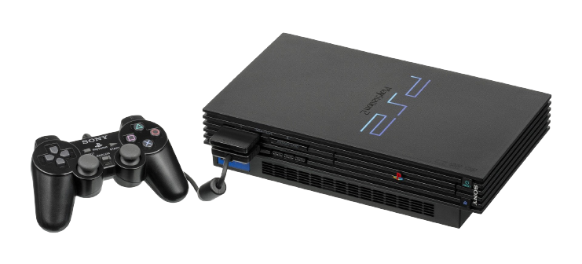

Era certo que a Sony seguiria investindo na área dos videogames após o grande sucesso do primeiro PlayStation. Em março de 1999, a Sony anunciou ao mundo o sucessor do console que havia conquistado o mundo, revelando que o PlayStation 2 seria lançado em breve.
O segundo PlayStation chegou como um dos nomes da sexta geração, concorrendo, assim como seu antecessor, com consoles da Sega e Nintendo, além de também disputar a preferência dos jogadores com um novo adversário: O Xbox. Se o PlayStation 1 já havia derrotado a concorrência sem piedade, o PS2 não teve muita dificuldade em repetir este feito. Com o 3D popularizado, o console chamou a atenção com jogos repletos de realismo, detalhes impressionantes e mecânicas inovadoras.